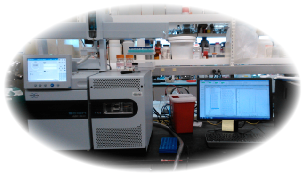

Our body contains thousands of different metabolites which are involved in various molecular reactions including energy consumption, molecule synthesis and cellular signalling. Our health is maintained by the proper reactions among these metabolites. However, when we have a disease, these reactions may not occur in appropriate ways. Or conversely, if these reactions do not occur in the appropriate ways, we may have symptoms of diseases. These inappropriate reactions may be reflected by the changes in levels of some of these metabolites. We aim to characterize these changes in the patients, investigate the molecular mechanisms behind these changes, predict diseases based on these changes and find molecular drug target which may be effective in treating the diseases.
⚓ We are organizing 2016 ISN Forefronts Symposium "The Metabolome and Microbiome in Kidney Disease - New technologies and insights for human diseases" as a part of the International Society of Nephrology (ISN), taking place in San Diego (USA) 23-25 September, 2016.
 Our team is multidisciplinary - We have physicians, biochemists, molecular biologists, statisticians and computational biologists as our members. We employ various methods to investigate metabolites and their physiological implications. Our laboratory has GC-MS to measure ~100 metabolites in urine or blood of the patients in high-throughput manner. We employ various state-of-art statistical model to characterize their profiles, and to predict outcome of patients. We also use bioinformatics to computationally predict important enzymes and proteins. We validate the predictions using mouse models.
Diabetic kidney disease is the leading cause of ESRD, but few biomarkers of diabetic kidney disease are available. We used gas chromatography-mass spectrometry to quantify 94 urine metabolites. We found that 13 metabolites were significantly reduced in the patients with diabetic kidney disease. Notably, organic anion transporter-1 (OAT1) knockout mice expressed a similar pattern of reduced levels of urinary organic acids, and human kidney tissue from patients with diabetic nephropathy demonstrated lower gene expression of OAT1 and OAT3. Analysis of bioinformatics data indicated that 12 of the 13 differentially expressed metabolites are linked to mitochondrial metabolism and suggested global suppression of mitochondrial activity in diabetic kidney disease. We suggest that urine metabolomics is a reliable source for biomarkers of diabetic complications, and our data suggest that renal organic ion transport and mitochondrial function are dysregulated in diabetic kidney disease.